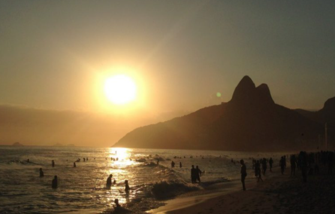
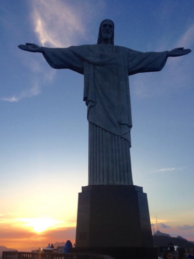
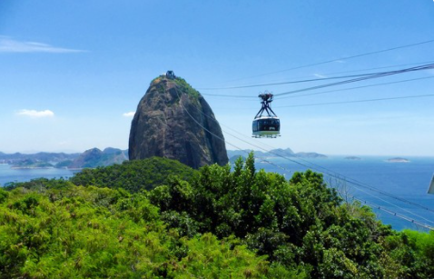

| Accueil | Nos voyages | Notre coup de coeur | Qui sommes nous? |
|---|
Rio de Janeiro, la deuxième plus grande ville du Bresil est également un incontournable de ce beau pays. Peuplé par un peu plus de 6 000 000 d'habitants et très connu pour ces immenses plages de sable mais également pour sa température (24 degrès en moyenne à l'année), voici 3 lieux de cette mégalopoleque nous vous conseillons de découvrir.
Sur les promenades, vous verrez des gens courir, faire du vélo ou du roller, de la musculation. La parade qui se déroule sur la plage est ponctuée par les vendeurs ambulants (attention cependant aux prix pratiqués pour les touristes), la musique et le bruit des vagues.
Le lieu le plus touristique de la ville certes, mais il vaut bien son détour! De là-haut, une vue à couper le souffle sur la ville et une des 7 merveilles du monde moderne. Pour que ce soit encore plus magique, allez-y à la tombée de la nuit, quand le ciel se pare d’un rose poudré et que le soleil fait ses adieux. Et bien sûr, essayez d'y aller quand le ciel est clair et non nuageux…
Pão de Açucar c'est le Pain de Sucre, ce sont les 2 collines sur lesquelles vous avez des œufs pour monter/descendre. Le Pain de Sucre est accessible par 2 téléphériques, en passant par le Morro da Urca. De la haut, vous avez une vue spectaculaire sur Rio. Idéale pour voir la beauté de Rio de Janeiro et les détails de son paysage.
